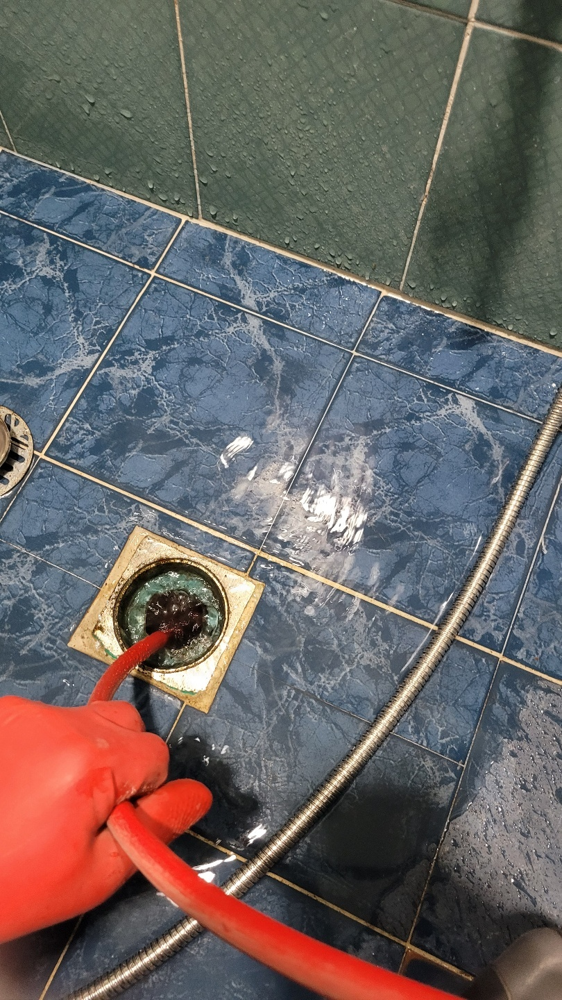
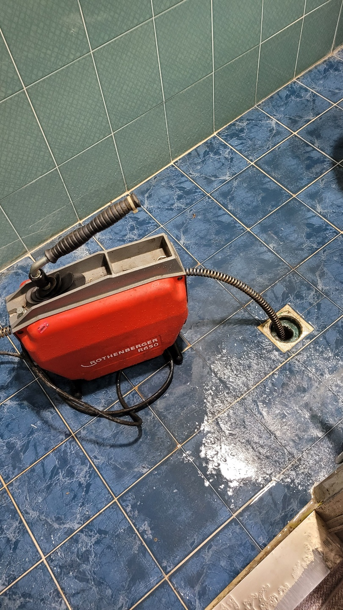

🏠 화성시 화장실하수구역류 뚫음 해결했어요 제대로 뚫은 현장입니다!
화성 하수구막힘 전문 시공 후기

📋 작업 개요
- 위치: 화성
- 서비스 유형: 하수구막힘, 배관막힘, 역류해결, 뚫는업체, 배관청소, 고압세척
- 작업 일시: 2022. 11. 22. 1:04
- 업체명: 하수구수사대 (010-5615-2118)
🔍 문제 상황
안녕하세요. 하수구수사대입니다.
이번에 다녀온 현장의 경우에는
주택가에 있는 화장실 내부에서 역류 현상이 발생하고 있다는 연락을 받고 다녀온 곳입니다. 현장의 막힘은 한 세대에서만 피해가 발생하고 있는 것이 아니라 여러 세대를 통해서 피해를 보고 있는 상황이라 급하게 해결이 필요한 현장이었습니다.
집안에서 가장 쾌적하게 이용을 해야 할 화장실이 막히게 되면 아무래도 일상의 불편함이 클 수밖에 없습니다. 그리고 역류가 발생을 하면서 악취가 상당히 많이 발생하고 있었는데요. 저희도 신속하게 작업을 해드리기 위해서 방문을 해드렸습니다.

🔎 원인 분석
💡 전문가 진단: 이번에 다녀온 현장의 경우에는
요즘은 아파트나 빌라와 같은 공동주택들이 많이 있습니다.
다세대주택이나 아파트 등에서 이러한 막힘이 발생을 하게 되면 여러 세대가 동시에 하수구 막힘을 경험하는 경우가 많이 있습니다. 이러한 막힘의 원인은 대부분 메인 배관을 통해서 문제가 발생하게 되는 경우가 많이 있습니다.
하지만 모든 배관의 작업은 정확한 원인을 파악을 해서 해결을 해야만 근본적인 원인을 제거할 수 있는 것입니다. 그래서 모든 현장을 방문 시에는 반드시 먼저 내시경 작업을 하고 있습니다.
화성시 화장실하수구역류 뚫음 해결했어요 현장에서도

🔧 작업 과정
하수구 내시경은 매일같이 이용을 하는 하수구의 내부 상태를 확인을 하기 위해서 사용하는 장비인데요. 카메라를 이용하게 되면 내부의 정확한 상황을 파악해 볼 수 있는 장점이 있습니다. 특히나 여름철과 같은 때에 하수구 막힘이 발생하게 되면 지독한 악취가 발생하기 때문에 아마도 이러한 부분이 가장 힘드실 것이라고 생각합니다.
더운 여름에는 배관 내부에 쌓여있던 이물질들이 부패되는 정도도 심각하기 때문에 더욱 빠르고 정확한 해결이 필요하다고 할 수 있습니다. 혹시라도 집안의 배수구를 청결하게 관리하고 있다고 생각을 하지만 지속적인 악취가 발생을 하고 있는 경우에는 하수관 내부에 문제가 있다는 것을 의심하고 전문가를 통해서 보다 신속하게 해결을 하시는 것이 좋습니다.
화성시 화장실하수구역류 뚫음 해결했어요 전문 업체를 통해서 내부의 상태를 살펴보았습니다.
전체적으로 세척이 필요한 경우에는 고압세척을 진행해야 하는데요. 이렇게 배수관 내에 이물질이 쌓이게 되는 이유는 평소에 배수구를 이용하면서 너무 아무렇지 않게 흘려보냈던 머리카락이나 기름때 등이 원인이 될 수 있는 것입니다.
이러한 배관 속에 있는 이물질들이 제대로 내려가지 못하게 되면 배관 내부에 자리를 잡으면서 굳어지게 되는 것인데요. 이러한 이물질들이 뭉쳐지고 오랜 시간이 흐르게 되면 커다란 돌덩이로 변하게 되는 것입니다. 이러한 것들이 반복이 되면 결국에는 물이 배수되지 못하게 되면서 하수구 막힘이 발생하게 되는 것입니다.
화성시 화장실하수구역류 뚫음 해결했어요 정확한 원인을 탐지하기 위해서 내시경으로 이곳저곳을 확인했는데요.
이 장비는 상당히 고가 장비로 모든 업체가 다 보유를 하고 있다고 할 수 없습니다. 그러므로 이러한 장비를 보유하고 있는 곳인지를 확인해 보는 것이 필요합니다. 문제의 원인을 제대로 파악을 하지 못하게 되면 결국에는 또다시 막힘이 발생할 수 있기 때문에 내시경을 통해서 정확하게 파악을 하는 것이 필요합니다.


✅ 작업 완료
전체적인 막힘이 일어나게 된 상황을 고객님에게도 자세하게 설명을 드리고 작업을 시작하였는데요. 과잉 시공이 되지 않도록 상세하게 설명을 해드리고 작업을 하고 있습니다. 고압세척을 통해서 작업을 진행하였는데요. 배관 내의 이물질들을 모두 제거를 하였습니다. 고객님께서도 청소 후의 배관의 상태를 보고 아주 만족해하셨습니다.
경기도 화성시 동탄대로 677-10 7층 715-A10호




⚠️ 하수구 배관 막힘 예방 및 관리 가이드
- ✅ 머리카락, 비닐, 물티슈 등 물에 분해되지 않는 이물질은 하수구 유입을 절대 금지해 주세요.
- ✅ 하수구 거름망을 씌우고 모여진 이물질은 주기적으로 쓰레기통에 바로 비워주셔야 합니다.
- ✅ 배관 노후가 심할 경우 이물질이 더 쉽게 걸리므로 주기적인 배관 세척(고압세척 등)을 권장합니다.
- ✅ 작업 후 1년 이내 재발 시 하수구수사대에서 무상 A/S 보증 서비스를 제공합니다.
💡 핵심 정리
- 확실한 장비 작업(내시경 점검 및 샤프트 스케일링)으로 원인을 뿌리 뽑습니다.
- 작업 후 1년 이내에 동일한 부위 재발 시 100% 무상 A/S 서비스를 보장합니다.
- 서울 · 경기 · 인천 전 지역에 24시간 언제든 긴급 출동할 수 있도록 항시 대기 중입니다.
❓ 자주 묻는 질문 (FAQ)
🚨 화성 하수구막힘 문제로 고민이신가요?
정확한 원인 진단과 확실한 시공으로 재발 없는 해결을 약속드립니다.
24시간 긴급 출동 | 서울 · 경기 · 인천 전지역 | 1년 내 재발 시 무상 A/S